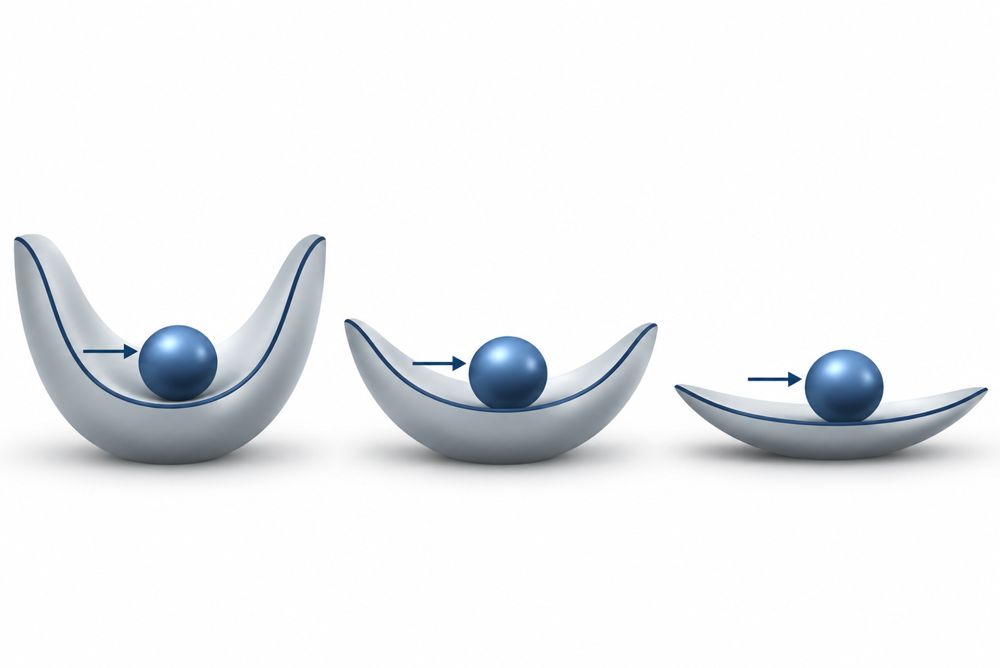
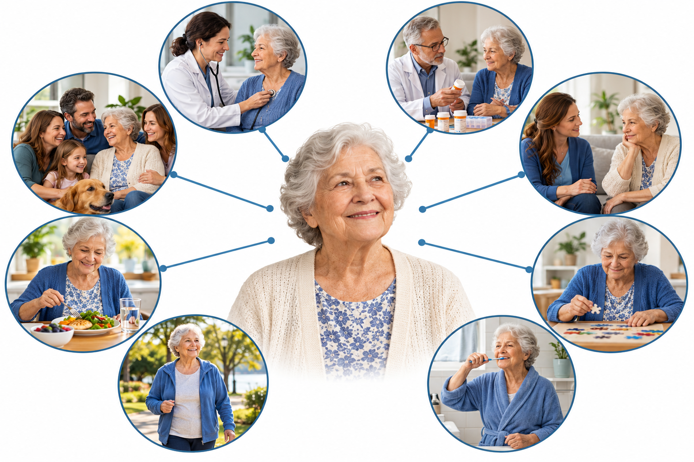
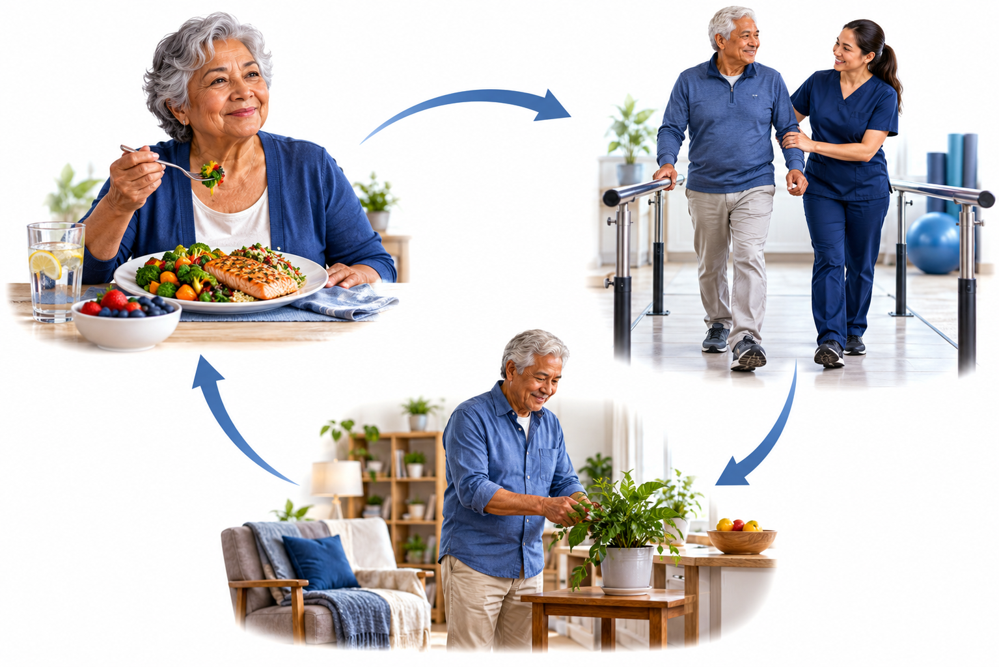

PATIENT EDUCATION · GERIATRICS
기운이 떨어진다면
생활기능을 함께 살펴요
노쇠·식사·움직임·약·돌봄을 함께 보는 진료
혈당·혈압이 잘 조절되어도 생활기능이 떨어질 수 있습니다
같은 스트레스에도 받는 영향이 달라질 수 있습니다

건강전노쇠노쇠같은 스트레스, 다른 회복 여력노인포괄평가(CGA)는 도울 수 있는 영역을 찾는 과정입니다
걷는 모습과 실제 생활을 함께 묻습니다
몸·마음·일상·주변 도움을 함께 봅니다

점수 하나로 앞으로의 삶을 단정하지 않습니다
| 구분 | 설명 |
|---|---|
| CFS · 1~9점 | 임상노쇠척도: 보행 상태와 생활기능 등을 진료진이 종합해 선별합니다. |
| CFS · 4점 | 강의에서는 전노쇠 단계로 설명합니다. |
| CFS · 5점 이상 | 강의에서는 노쇠로 보고 다면적 평가와 중재를 강조합니다. |
| 노쇠지수 · FI | 문제가 있는 평가 항목 수 ÷ 전체 평가 항목 수입니다. |
| FI · 0.25 | 강의 예: 40개 중 10개 항목에 문제가 있으면 0.25입니다. ≥0.25를 노쇠로 설명합니다. |
영양과 신체 활동 능력은 서로 연결된 평가 영역입니다

질병 조절과 약의 부담을 함께 살핍니다
 수면·진정제
수면·진정제식사·체중·신체 능력과 약의 이득을 함께 봅니다
강의에서 소개한 2026 지역사회 통합돌봄입니다
필요도에 따라 개인별 지원계획으로 연결합니다
일상돌봄신청 → 조사 → 계획 → 연계 → 모니터링
노쇠 정도와 실제 생활의 어려움을 진료에서 알려주세요
| 구분 | 설명 |
|---|---|
| 방문요양 | 집에서 신체활동과 일상생활을 지원 |
| 방문목욕·방문간호 | 목욕과 간호, 진료 보조 및 요양 관련 상담 지원 |
| 주야간·단기보호 | 일정 시간 또는 기간 동안 보호와 활동 지원 |
| 진료에서 연결 | 연자는 CFS 5·6점 정도에서 돌봄 필요를 살펴 장기요양 또는 통합돌봄 연계를 강조 |
| 평가와 신청 | CFS는 노쇠 선별 도구이며, 서비스 등급의 신청·판정 과정과 구별합니다. |
좋아지는지 볼 때도 검사 수치와 생활기능을 함께 봅니다
노쇠·식사·움직임·약·돌봄을 함께 보는 진료